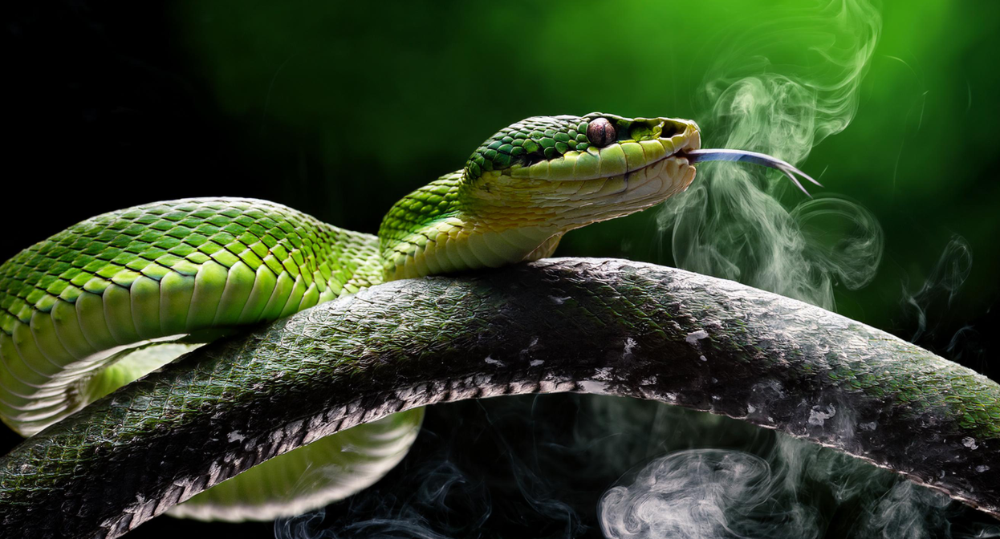
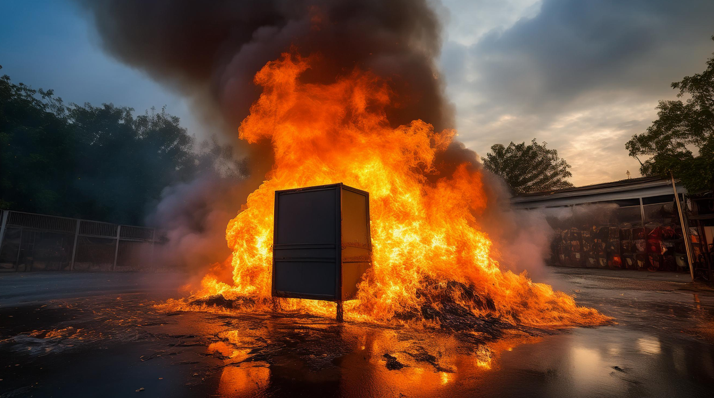

Alarms:
Not only it alarms fire, it can alarm any emergency like an earthquake, someone breaking in, an injured, etc. It can alarm disasters for you to get the chance to be safe.

Automatic Cleaning:
This house can clean all by itself so you won’t have too. Just like a normal dishwasher, this one is a better and faster dishwasher unlike any other!

The Ceiling walls have a waterfall in the backyard for you to listen and enjoy, but can you make it stop anytime you want by being on top of the roof and shutting it off.

We have water rats, all over the house. They have water inside and they like to splash water but they are clean and intelligent rats.

We have mini robots with green chemical inside and outside of them, they will help you with almost whatever you want just not anything because they are small.
We also have snakes because why not. There are 20 of them in the house who looks like this image shown and taken in the crazy backyard.
There are not just intelligent mice, there are also artifical intelligent mice as well that can do much more than normal mice, Like clean up dirt and dust anywhere.
There is also an incinerator. Yeah. Use that on any garbage all you want. That's about it. Nothing else to say about it.

Oh yeah, the normal intelligent mices can take larger garbage to the incinerator. Okay, that's really all.
Follow Us!